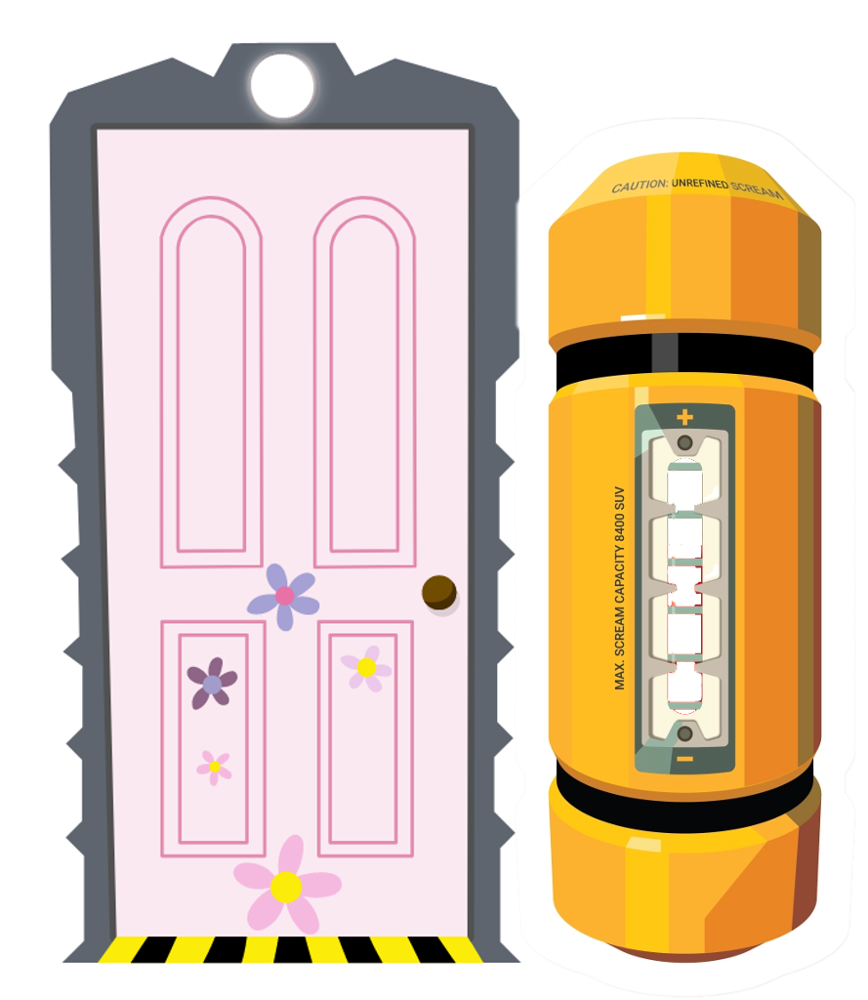

¡Bienvenido al Simulador de Gritos!
Instrucciones del juego:
Al igual que en las pelicula, ¡debes de gritar tan alto como puedas!
Mientras más alto tu grito, ¡más rápido llenarás la bateria! Una vez llena
la bateria, la puerta podrá encenderse.
Para ver que tan alto estás gritando debes revisar la pantalla OLED.